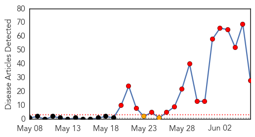
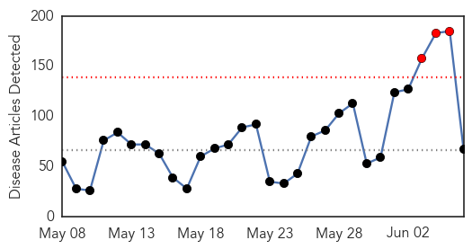
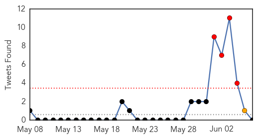
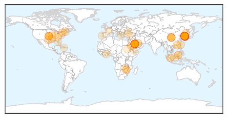

MERS
30-Day Web Trend
16 alerts, 2 warnings

30-Day Twitter Trend
8 alerts, 1 warnings

Article Locations

Article Confidences

Top Articles:
- 0.999
- South Korea reports nine new MERS cases
- 0.998
- Gulf Daily News Local News Caution for citizens as Mers hits South Korea
- 0.998
- WHO to take part in mission following MERS outbreak in South Korea
- 0.998
- WHO: No need for travel advisory amid MERS outbreak in S. Korea
- 0.998
- Vietnam puts together 4 fast-response teams to confront MERS-CoV
- 0.997
- First MERS patient in China ...｜Society｜WCT
- 0.997
- South Koreans squabble about MERS as more cases appear : World, News
- 0.996
- Quick Response And Low Infectivity Could Avert MERS Epidemic
- 0.995
- Korea names MERS-affected hospital, tracks all visitors, news, Health News, AsiaOne YourHealth
- 0.995
- Pinoys in Korea urged to take precautions against MERS-CoV
- 0.992
- China prepares to tackle MERS｜Society｜WCT
- 0.991
- Third MERS patient dies in South Korea
- 0.991
- UN health agency dispatches team to Seoul after fourth death
- 0.990
- Prevention methods initiated over MERS fears
- 0.986
- Untitled Article
- 0.985
- As MERS Fears Spread, History Offers Sobering Lesson
- 0.977
- MERS shows no mercy in Saudi Arabia, South Korea
- 0.961
- Filipinos in S. Korea urged to guard against MERS-CoV
- 0.946
- FOR MERS-CoV: DOH-7 remains on heightened alert
- 0.922
- South Korean MERS death toll rises again
- 0.912
- Palace asks Filipinos in South Korea to take precautions vs Mers-Cov
- 0.907
- MERS in Saudi Arabia and in Korea
- 0.895
- Palace asks Filipinos in South Korea to take precautions vs MERS-CoV
- 0.892
- Filipinos in South Korea told: Take precautions vs MERS-CoV
- 0.876
- Cambodia urges laborers in S. Korea to be vigilant over MERS
- 0.875
- KBS World Radio
- 0.640
- Major carriers will not cut ...｜Society｜WCT
- 0.608
- Nong Khai border post steps up measures against MERS-CoV spread
Top Tweets:
- 0.778
- AFD Blog `Korean MERS Sequences Closely Match Middle Eastern Virus' MERS-CoV http://t.co/oXCbAZeJSu
- 0.745
- AFD Blog `Saudi MOH: 2 More MERS Cases In Hofuf ' MERS-CoV http://t.co/EZ6tBAqwmQ
Unknown
30-Day Web Trend
3 alerts, 0 warnings

30-Day Twitter Trend
4 alerts, 2 warnings

Article Locations
Article Confidences
Top Articles:
- 1.000
- South Korea MERS virus cases reach 50 people
- 1.000
- S. Korea Reports Nine More Cases of MERS
- 1.000
- South Korea raises MERS case count to 50, rules out virus mutation
- 0.999
- MERS cases rise among group in South Korea
- 0.999
- South Korea MERS virus cases reach 50 people
- 0.999
- South Korea MERS Virus Cases Reach 50 People — Naharnet
- 0.999
- South Korea MERS virus cases reach 50 people
- 0.998
- (2nd LD) S. Korea reports 9 additional MERS cases, raising total to 50
- 0.998
- 1,369 Quarantined, New Cases Recorded
- 0.998
- China Completes Genome Sequencing of Imported MERS Case
- 0.997
- South Korea reports nine new cases in MERS outbreak
- 0.997
- South Korea MERS virus cases reach 50 people
- 0.997
- (LEAD) S. Korea reports 9 additional MERS cases, raising total to 50
- 0.997
- S Korea MERS virus cases reach 50 people
- 0.996
- 7 more infected with MERS
- 0.996
- South Korea MERS virus cases reach 50 people
- 0.994
- South Korea MERS virus cases reach 50 people
- 0.994
- S. Korea shuts schools in face of MERS threat
- 0.991
- Seoul at risk as MERS infections climb -
- 0.991
- 9 more MERS infections reported in S.Korea, capital Seoul in danger
- 0.989
- Nine new MERS cases reported in South Korea
- 0.988
- MERS – South Korea – Update – Sobering lessons coming from history – but no respite yet
- 0.982
- Phuket airport health officials on Mers alert for South Korea arrivals
- 0.980
- All school trips to South Korea postponed or cancelled: MOE
- 0.979
- MOE monitoring MERS situation; all school trips to South Korea postponed, cancelled
- 0.969
- WHO: MERS transmission rate 'lower than SARS'
- 0.943
- MERS cases rise to 50 in S. Korea with 9 more infections
- 0.930
- News Analysis: Politicized MERS in S. Korea pits central gov't against city authorities - Xinhua
- 0.926
- South korea records 9 new infections after MERS cases shoot up to 50 -
- 0.919
- School trips to South Korea cancelled due to Mers; students and teachers there have returned, Singapore News & Top Stories
- 0.917
- Chicago Tribune
- 0.917
- Chicago Tribune
- 0.870
- Update on latest MERS situation in Korea
- 0.830
- Flesh Eating Bacteria
- 0.829
- State should speak up about chicken pox sites
- 0.821
- South Korea's MERS Crisis Exposes Public Distrust Of Leaders
- 0.796
- MERS deals travel agents blow --China Economic Net
- 0.783
- MERS deals travel agents blow
- 0.777
- Rebel-linked violence shuts Uruzgan health facilities
- 0.768
- Gov't vows utmost efforts to contain MERS
- 0.735
- Medical, Fire & Rescue teams ascend Mt Kinabalu
- 0.725
- Diarrhoea Outbreak Alert
- 0.718
- New York State News on the Net!
- 0.716
- CDC: Bird flu could possibly affect humans
- 0.712
- Kaiser Permanente Fresno uses 'zapper' machine to get rid of deadly bacteria
- 0.699
- donga.com[English donga]
- 0.698
- U.S Observers Urge Washington to Monitor Tense Situation in Harare
- 0.698
- Nearly 50 Indiana students test positive for tuberculosis
- 0.698
- U.S Observers Urge Washington to Monitor Tense Situation in Harare
- 0.682
- Queensland hospital Lady Cilento Children’s Hospital turns sick children away
Showing top 50 articles...
Top Tweets:
- 0.644
- RT: S. Korea confirms 50 MERS cases, 1,820 people have been quarantined, over 1,300 schools have been shut http://t.co/6jlGpchbax
- 0.558
- A tocar en Las Catalinas en unos minutos. Se pasa bien. @LaRespuestaENT